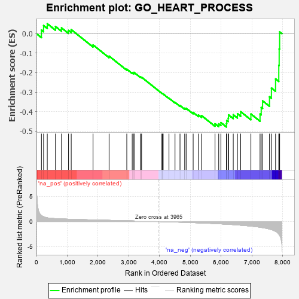
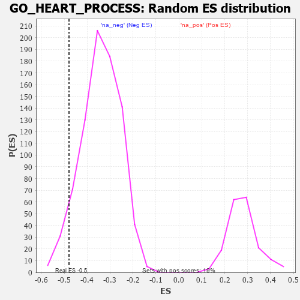

| | | Dataset | 7d |
| Phenotype | NoPhenotypeAvailable |
| Upregulated in class | na_neg |
| GeneSet | GO_HEART_PROCESS |
| Enrichment Score (ES) | -0.47909734 |
| Normalized Enrichment Score (NES) | -1.4080621 |
| Nominal p-value | 0.055214725 |
| FDR q-value | 0.3148441 |
| FWER p-Value | 1.0 |
Table: GSEA Results Summary

Fig 1: Enrichment plot: GO_HEART_PROCESS
Profile of the Running ES Score & Positions of GeneSet Members on the Rank Ordered List
| PROBE | GENE SYMBOL | GENE_TITLE | RANK IN GENE LIST | RANK METRIC SCORE | RUNNING ES | CORE ENRICHMENT | | 1 | CSRP3 | | | 161 | 1.186 | 0.0185 | No |
| 2 | SMAD5 | | | 231 | 0.979 | 0.0418 | No |
| 3 | GSK3A | | | 351 | 0.745 | 0.0511 | No |
| 4 | KCND2 | | | 617 | 0.590 | 0.0370 | No |
| 5 | GLRX3 | | | 813 | 0.529 | 0.0297 | No |
| 6 | YAP1 | | | 1041 | 0.475 | 0.0166 | No |
| 7 | SRC | | | 1128 | 0.459 | 0.0207 | No |
| 8 | GATA4 | | | 1837 | 0.330 | -0.0578 | No |
| 9 | RNLS | | | 2358 | 0.252 | -0.1152 | No |
| 10 | TAZ | | | 2933 | 0.161 | -0.1823 | No |
| 11 | GPX1 | | | 3109 | 0.135 | -0.2000 | No |
| 12 | PPCS | | | 3165 | 0.127 | -0.2027 | No |
| 13 | GCH1 | | | 3166 | 0.127 | -0.1986 | No |
| 14 | SMAD7 | | | 3369 | 0.093 | -0.2210 | No |
| 15 | KCNK1 | | | 3413 | 0.088 | -0.2236 | No |
| 16 | ATG5 | | | 4051 | -0.016 | -0.3034 | No |
| 17 | PDE4B | | | 4089 | -0.022 | -0.3074 | No |
| 18 | MTOR | | | 4114 | -0.025 | -0.3096 | No |
| 19 | TBX2 | | | 4303 | -0.060 | -0.3313 | No |
| 20 | MEF2A | | | 4499 | -0.095 | -0.3528 | No |
| 21 | ITPR1 | | | 4661 | -0.130 | -0.3689 | No |
| 22 | P2RX4 | | | 4813 | -0.161 | -0.3827 | No |
| 23 | DLG1 | | | 4860 | -0.169 | -0.3829 | No |
| 24 | DRD2 | | | 5088 | -0.221 | -0.4043 | No |
| 25 | SCN1A | | | 5260 | -0.261 | -0.4174 | No |
| 26 | ITPR3 | | | 5361 | -0.288 | -0.4206 | No |
| 27 | ADA | | | 5798 | -0.405 | -0.4623 | No |
| 28 | KCNQ1 | | | 5918 | -0.441 | -0.4629 | Yes |
| 29 | KCNH6 | | | 5988 | -0.467 | -0.4564 | Yes |
| 30 | STIM1 | | | 6169 | -0.528 | -0.4618 | Yes |
| 31 | THRB | | | 6178 | -0.531 | -0.4455 | Yes |
| 32 | TPM1 | | | 6226 | -0.545 | -0.4336 | Yes |
| 33 | CDC42 | | | 6236 | -0.548 | -0.4168 | Yes |
| 34 | TRPM4 | | | 6390 | -0.612 | -0.4161 | Yes |
| 35 | ACE | | | 6526 | -0.674 | -0.4111 | Yes |
| 36 | WWTR1 | | | 6631 | -0.729 | -0.4004 | Yes |
| 37 | DNM1L | | | 6963 | -0.913 | -0.4123 | Yes |
| 38 | HCN4 | | | 7260 | -1.134 | -0.4125 | Yes |
| 39 | ANK2 | | | 7298 | -1.170 | -0.3789 | Yes |
| 40 | GPD1L | | | 7343 | -1.215 | -0.3447 | Yes |
| 41 | CALM1 | | | 7567 | -1.499 | -0.3238 | Yes |
| 42 | KCNN2 | | | 7629 | -1.611 | -0.2788 | Yes |
| 43 | PDE4D | | | 7764 | -1.944 | -0.2322 | Yes |
| 44 | CALM3 | | | 7869 | -2.525 | -0.1627 | Yes |
| 45 | FYN | | | 7881 | -2.622 | -0.0784 | Yes |
| 46 | CAV3 | | | 7896 | -2.739 | 0.0095 | Yes |
Table: GSEA details [plain text format]

Fig 2: GO_HEART_PROCESS: Random ES distribution
Gene set null distribution of ES for GO_HEART_PROCESS